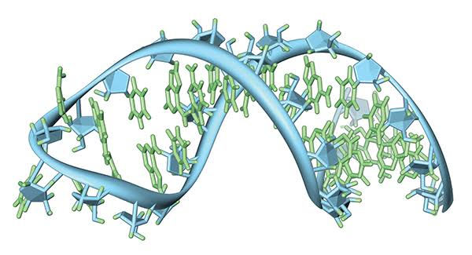

DNA
O DNA, ou ácido desoxirribonucleico, armazena as informações genéticas de um organismo. Essas informações orientam o desenvolvimento e o funcionamento dos seres vivos e podem ser transmitidas de uma geração para outra.
Conheça os ácidos nucleicos
Os ácidos nucleicos são macromoléculas responsáveis por armazenar e transmitir as informações genéticas dos seres vivos. Eles são formados por unidades menores chamadas nucleotídeos e são essenciais para o funcionamento das células.
O DNA, ou ácido desoxirribonucleico, armazena as informações genéticas de um organismo. Essas informações orientam o desenvolvimento e o funcionamento dos seres vivos e podem ser transmitidas de uma geração para outra.

O RNA, ou ácido ribonucleico, participa da expressão das informações genéticas, especialmente na produção de proteínas. Existem diferentes tipos de RNA, cada um com funções específicas dentro das células.
Armazena as informações genéticas dos seres vivos.
Participa da utilização das informações genéticas, principalmente na produção de proteínas.
Os ácidos nucleicos são fundamentais para a hereditariedade e para a produção de proteínas. O DNA guarda as informações genéticas, enquanto diferentes tipos de RNA ajudam a utilizar essas informações para realizar atividades essenciais à vida.
O estudo dos ácidos nucleicos é importante em exames de DNA, testes de identificação genética e pesquisas científicas. Essas aplicações ajudam a compreender características hereditárias e investigar doenças genéticas.
Um exemplo do uso do conhecimento sobre o DNA são os testes de paternidade, que comparam informações genéticas para verificar o parentesco entre pessoas.